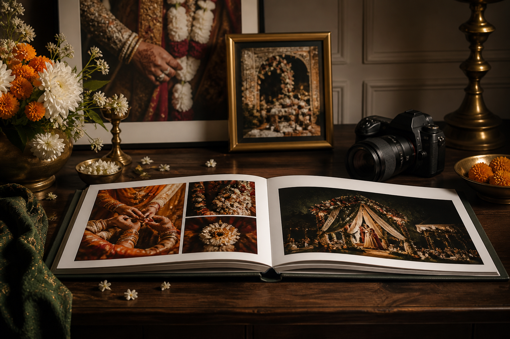
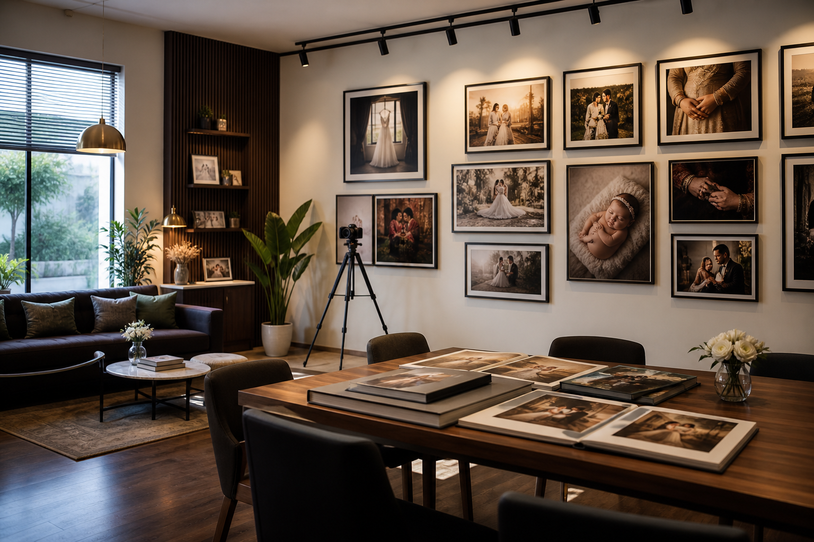
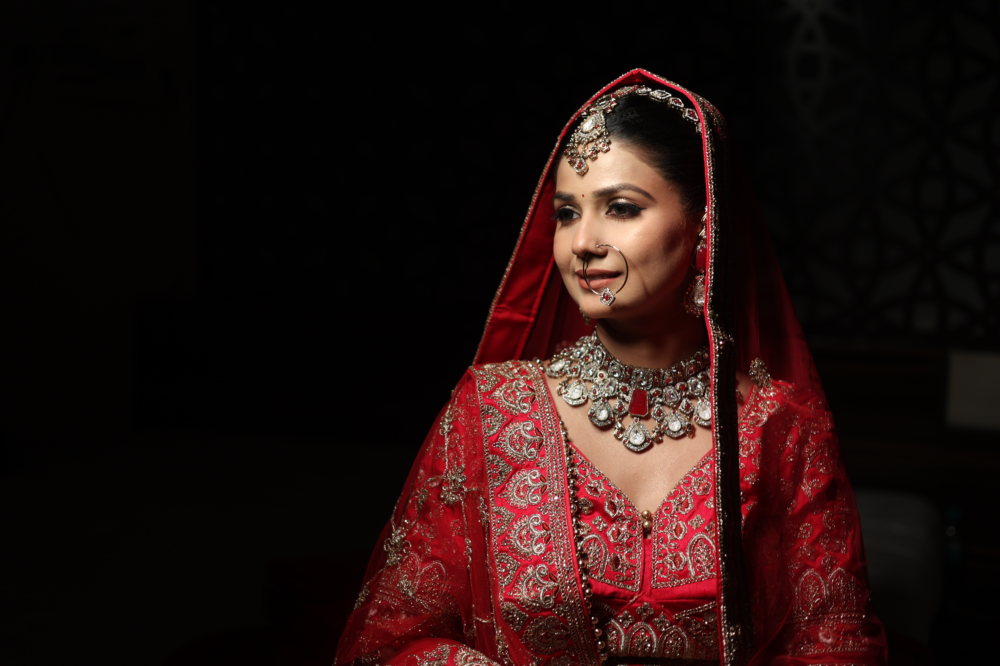
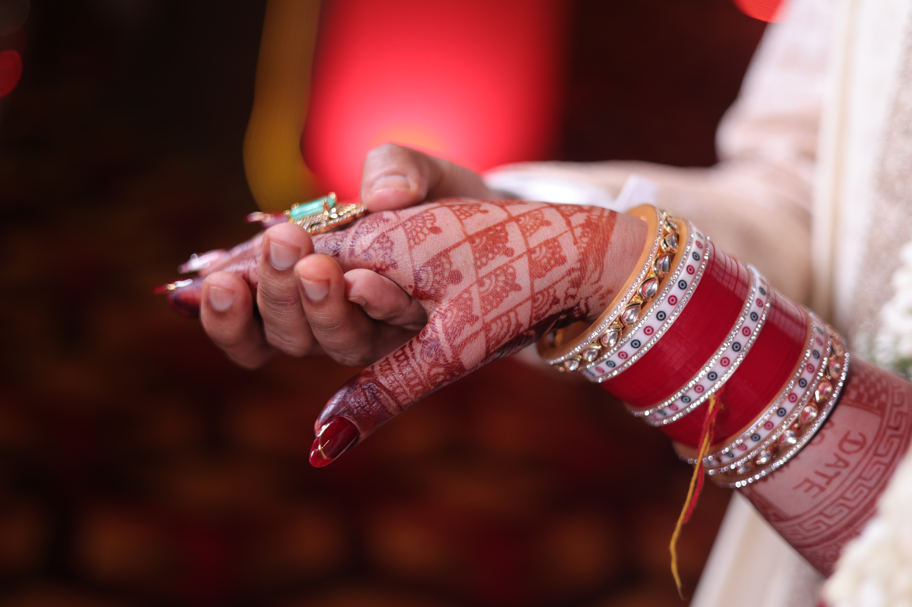
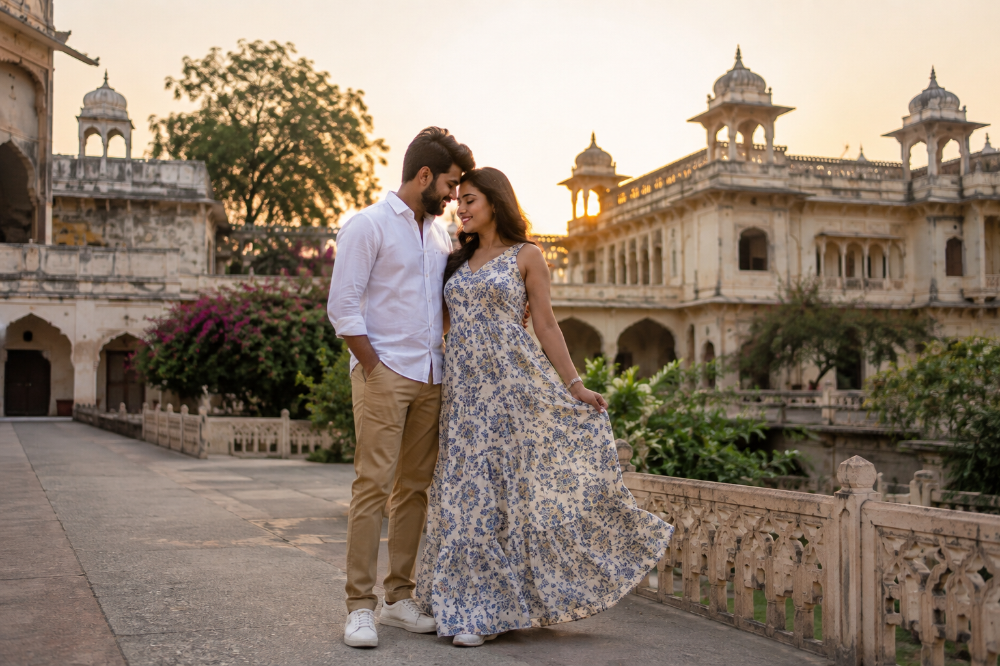
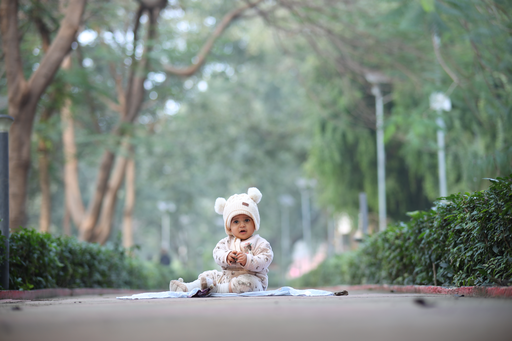
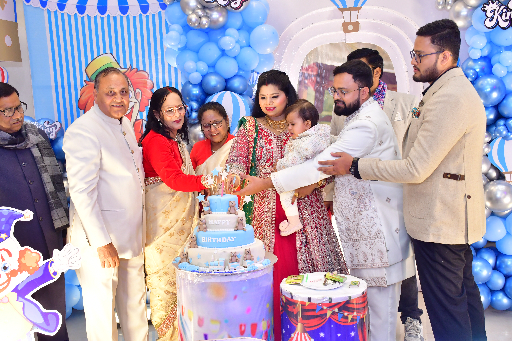
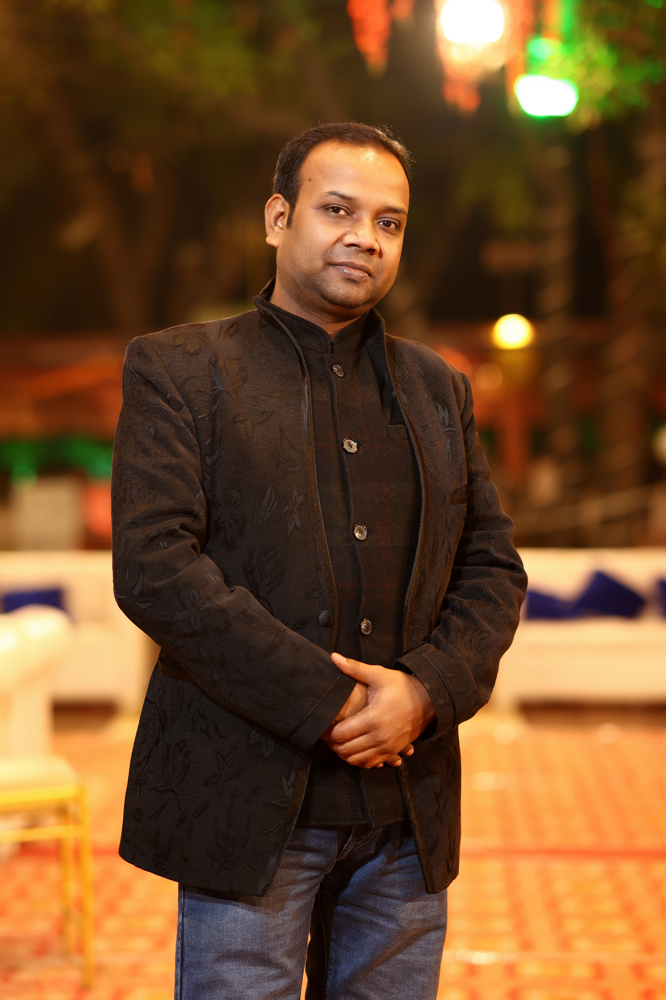

Wedding Photography
Elegant wedding photography coverage for rituals, portraits, candid moments, family groups, and reception memories anywhere in India.

Premium Photography Studio in Kanpur — Wedding Photographer
Wedding photography in Kanpur and across India — pre-wedding shoots, birthday photography, baby showers, and premium wedding album printing crafted with patient attention to emotion and detail.
About the Studio
Pankaj Photo colour lab & Digital Photo Studio is a photography studio based in Kanpur with India-wide service coverage, specialising as a wedding photographer in Kanpur and beyond.
The studio brings together photography, editing, color correction, and wedding album printing from its Kanpur base so clients across India can plan their shoot and final keepsakes with clarity.

Services
Choose focused photography services across India for the moments you want documented with warmth, clarity, and a premium print-ready finish.
Elegant wedding photography coverage for rituals, portraits, candid moments, family groups, and reception memories anywhere in India.
Thoughtfully planned pre wedding shoot sessions with location guidance, styling direction, and cinematic couple portraits across India.
Premium wedding album printing service with layout, color correction, paper selection, and durable finishing for clients across India.
Birthday photography coverage for children, families, milestone celebrations, decor details, and candid guest moments across India.
Gentle baby shower photography sessions for maternity memories, family blessings, decor, and emotional close-ups across India.
Clean portraits for couples, families, children, and personal milestones with controlled lighting and print-ready retouching.
Portfolio
The portfolio direction balances rich wedding color, clean family storytelling, and album-first composition. Many shoots are photographed in Kanpur and across India; each frame is treated as a candidate for print.
Book a portfolio consultation





Founder
Pankaj Kushwaha started Pankaj Photo colour lab & Digital Photo Studio after years of photographing weddings, family milestones, and intimate celebrations across India. He believes in building long-term relationships with clients.
From early portrait sessions in local homes to premium wedding albums, Pankaj's journey is driven by a desire to make photography simple, memorable, and meaningful for every client.
Pankaj brings hands-on direction to every shoot, combining warm guidance with a polished final print experience.
Testimonials
These review cards are ready for exact client names and real review text when available.
"The album finish and picture quality felt premium, and the team made the family very comfortable."
"Our baby shower photos captured small emotional moments beautifully. The delivery was organized and easy."
"The pre-wedding shoot planning, posing, and final edits were handled with patience and taste."
FAQ
These questions are structured so future service pages can reuse the same content blocks.
Yes. The studio is positioned for wedding photography across India, including rituals, couple portraits, family coverage, candid moments, and album-ready image delivery.
Yes. Pre wedding shoot sessions can include location planning, styling direction, guided posing, and cinematic couple photography across India.
Yes. Wedding album printing is part of the studio offering, including layout, color correction, paper selection, and finishing for clients across India.
Yes. Birthday photography and baby shower photography services are available for family celebrations, decor, portraits, and candid memories across India.
Contact
Share your event date, service type, venue or preferred location, and album requirements. The studio can then guide you with the right photography and printing plan for weddings, pre-wedding shoots, events, or portraits.
Location & Reviews
Pankaj Photo colour lab & Digital Photo Studio is a trusted photography studio in Shyam Nagar, Kanpur since 2006. We offer wedding photography, pre-wedding shoots, album printing, couple sessions, and family event coverage.
Our Google rating is 4.1 out of 5 based on local reviews. Clients describe the experience as reliable, affordable, and photo-ready — with easy access for in-studio visits and outdoor location shoots.